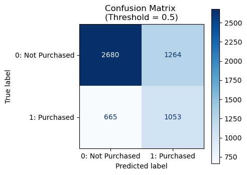
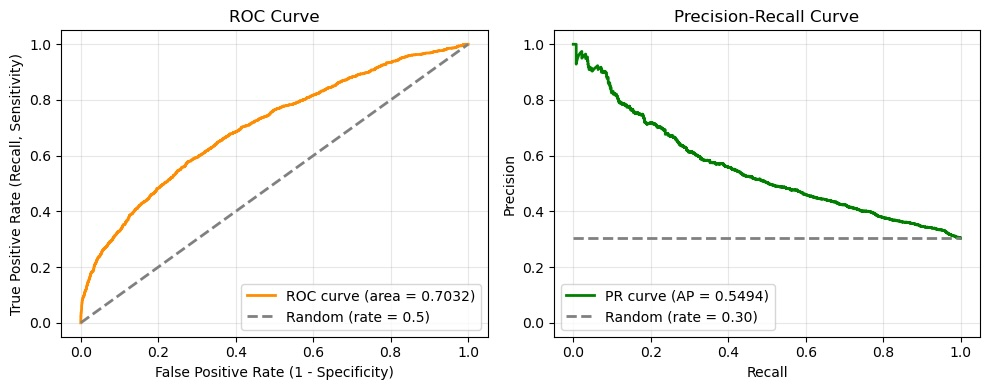

機械学習のモデルをどう評価するか。ここでは2値分類を中心に「分類性能の評価」「閾値によらない識別性能」について代表的な評価指標を。
サンプル事例
Python 3.11.15 OS macOS-26.5.1-arm64-arm-64bit pandas 3.0.2 numpy 2.4.3 matplotlib 3.10.9 seaborn 0.13.2 scikit-learn 1.8.0 shap 0.51.0 lightgbm 4.6.0
モデルが最終的に「1」か「0」かを予測した結果を評価する。実際の結果と予測結果を組み合わせると、2×2の混同行列として整理できる。対角線上のセルが多いほど、正しく分類できた件数が多い。
| 予測: 負例 | 予測: 正例 | |
|---|---|---|
| 実際: 負例 | TN（True Negative） | FP（False Positive） |
| 実際: 正例 | FN（False Negative） | TP（True Positive） |
混同行列（Confusion Matrix）の各象限
混同行列における配置は常に同じとは限らないので、場所で覚えちゃダメ

サンプル事例での結果は、合計5,662人のうち実際の購入者は1,718人（出現率30%）、非購入者は3,944人。この4セルのどこに注目するか。
TP (True Positive): 1053 件 TN (True Negative): 2680 件 FP (False Positive): 1264 件 FN (False Negative): 665 件
すべての予測対象のうち、正しく予測できた割合（正解率）。
Accuracy = (TP + TN) / (TP + TN + FP + FN)
Accuracyは数値の意味がわかりやすく、モデルの基本的な予測性能比較など有用な場面もある。
正例と予測した対象のうち、実際に正例だった割合（適合率）。
Precision = TP / (TP + FP)
実際は正例の対象のうち、正しく正例と予測できた割合（再現率）。
Recall = TP / (TP + FN)
2値分類モデルは基本的に、正例である確率（0.0〜1.0）を出力する。これを人間が判断しやすい二択のラベル（0/1）に振り分けてる。
しきい値（threshold）を0.5（一般的なデフォルト値）にするとは、すなわち、確率0.5以上は「1:購入する」と予測、確率0.5未満は「0:購入しない」と予測したものとみなす、という意味。なお0.5は「正例と予測する確率が半分以上」という直感的な（自然な）基準であり、常に最適なしきい値というわけではない。
しきい値を高くすると、かなり確信のある人だけを正例とするため、Precisionは高くなりやすい。そのぶん正例と予測する人数が減るので、Recallは低くなりやすい。
逆に、しきい値を低くすると、少しでも購入可能性があれば正例とするため、Recallは高くなりやすい。ただし実際には買わない人も多く含まれるため、Precisionは低くなりやすい。
例えば、予定しているクーポン配布施策の予算が潤沢にあるなどの理由で、買う確率が0.3ぐらいの人もクーポン配布対象にしたいなどのビジネス判断が先にある、検討余地がある場合には、しきい値を0.5ではなく0.3にして評価するという手もある（詳細後述）。
つまり、しきい値を動かすことでもPrecisionとRecallの値は変わるため、「何のための予測なのか」「何を重視したいのか」が明確になってないと、モデルの評価、判断もしにくい。
PrecisionとRecallの両方を考慮したい場合に。
F1 = 2 * (Precision * Recall) / (Precision + Recall)
PrecisionとRecallからF1へのつながり
対処策1
対処策2
F1 score = 1 / { (1/Precision + 1/Recall) / 2 }
= 2 / { (1/Precision) + (1/Recall) }
= 2 / { (Recall + Precision) / (Precision * Recall) }
= 2 * Precision * Recall / (Precision + Recall)
なお、PrecisionとRecallのどちらかを明確に重視したい場合には、F1-scoreを拡張したFβ-scoreという指標もある。βを大きくするとRecall、小さくするとPrecisionをより重視した評価になる。
ただし、どの程度の重み付けが適切かは用途によって異なる。実務では、Fβ-scoreという1つの数値にまとめるよりも、PrecisionとRecallを個別に確認し、施策コストや取りこぼしの損失を考慮して判断するほうがわかりやすい場面も多い。
「このモデルは、正例と負例を本当に区別できているのか？」を確認したいときに役立つ指標。
Precision, Recall, F1-scoreは主に正例に注目した指標。対してMCCは、混同行列の4セルすべてを使って、実際のクラスと予測クラスの一致関係を評価する指標（実際と予測の相関係数）。Matthews Correlation Coefficient
MCC = (TP × TN − FP × FN) / √{(TP + FP)(TP + FN)(TN + FP)(TN + FN)}
mcc = (tp * tn - fp * fn) / math.sqrt((tp + fp) * (tp + fn) * (tn + fp) * (tn + fn))
# 一気に計算する場合、モデルが全員を同じクラスに予測した時などに、分母が0になるケースがある
# 分子の計算: (TP * TN) - (FP * FN)
mcc_numerator = (tp * tn) - (fp * fn)
# 分母の計算: sqrt((tp+fp) * (tp+fn) * (tn+fp) * (tn+fn))
mcc_denominator = math.sqrt((tp + fp) * (tp + fn) * (tn + fp) * (tn + fn))
# 分母が0の場合はMCCを0とする（ライブラリ次第）
if mcc_denominator == 0:
mcc = 0
else:
mcc = mcc_numerator / mcc_denominator
print(f"MCC (Matthews Correlation Coefficient): {mcc:.3f}")
MCCのとる範囲は-1から1の間。
正例と負例の両方を考慮するため、クラス不均衡な場合にも、モデルの分類性能をシビアに評価しやすい（多数派のクラスで正答を稼いだ高Accuracyなモデルでも、MCCは高くなりにくい）。
クラス不均衡でも、正解率をシンプルかつ公平に評価したい場合に（均衡正解率）。
Balanced Accuracy = (Recall + Specificity) / 2
Specificity(特異度) : 実際は負例の対象のうち、正しく負例と予測できた割合（真陰性率） Specificity = TN / (TN + FP)
同じ重みとは？ 例えば正例の出現率が1%で、かつ正例のみに関心がある場合に、1%しかない大事な貴重な正例を半分見逃すのと、99%の負例（不要なもの）を半分拾いすぎるのを、同程度にダメ出しするようなこと。
逆に言えば、AccuracyはRecallとSpecificityを出現率で重み付けしている（がために正例・負例の出現率次第で、数値の見え方、評価の基準が変わってくる）。
Accuracy = ( TP + TN ) / Total
= ( TP / Total ) + ( TN / Total )
= { TP / (TP+FN) * (TP+FN) / Total } + { TN / (TN+FP) * (TN+FP) / Total }
= (Recall * 正例出現率) + (Specificity * 負例出現率)
4セルの組み合わせ次第で、他にもいろんな指標が算出可能。似たものにも見えるが、分母の捉え方がちょっとずつ異なる。
| 指標 | 式 | 意味 | 補足 |
|---|---|---|---|
| NPV (Negative Predictive Value) | TN / (TN + FN) | 負例と予測した対象のうち、実際に負例だった割合（陰性的中率） | Precisionの裏に相当。負例にあまり関心がない場面では影が薄い。精密機器の良品判定（不良品と予測して実際に不良品でした）などで有用。 |
| Specificity | TN / (TN + FP) | 実際は負例の対象のうち、正しく負例と予測できた割合（真陰性率）。 | Recallの裏に相当する。スパム判定（大事なメールを間違えてゴミ箱に入れない）などで有用。負例を精度高く予想したい、負例を正しく負例としたいときに。 |
| FDR (False Discovery Rate) | FP / (TP + FP) | 正例と予測した対象のうち、実際は負例だった割合（偽発見率） | 分母はPrecisionと同じ。Precisionの余事象に相当（FDR = 1 - Precision）。 |
| FPR (False Positive Rate) | FP / (TN + FP) | 実際は負例の対象のうち、誤って正例と予測した割合（偽陽性率） | 分母はSpecificityと同じ。Specificityの余事象に相当（FPR = 1 - Specificity）。のちほど登場する指標ROC曲線、ROC-AUCに関わってくる。 |
| FNR (False Negative Rate) | FN / (TP + FN) | 実際は正例の対象のうち、誤って負例と予測した割合（偽陰性率） | 分母はRecallと同じ。Recallの余事象に相当（FNR = 1 - Recall）。見逃し（False Negative）がクリティカルに直結する（命に関わる）ような医療現場などで有用。 |
MCC同様に実際のクラスと予測クラスの一致度を評価する指標。違いは、偶然による一致を考慮する点。実際と予測が一致したのは、モデルの実力なのか、それともたまたまなのか。たまたま当たったぶん（期待値）を全体から引いて、純粋な予測の重みを評価する。
クラスの出現率割合と予測割合から「偶然でもこれくらいは一致しそう」という一致率を考え、その分を差し引いて評価する。
Cohen's Kappaのとる範囲は-1から1の間。
ただし、クラスの偏りや予測割合によって値が影響を受ける場合があり、機械学習の分類性能評価では、MCCやBalanced Accuracy、Precision/Recall系の指標のほうが解釈しやすいことが多い。
# 1. 数値をセット
total = tp + tn + fp + fn
# 2. po (実際の正解率)
po = (tp + tn) / total
# 3. pe (偶然当たっちゃう確率)
# 「モデルの正例予測数 × 実際の正例数」 ＋ 「モデルの負例予測数 × 実際の負例数」 を Totalの2乗で割る
pe = ((tp + fp) * (tp + fn) + (tn + fn) * (tn + fp)) / (total ** 2)
# 4. Kappaの計算
kappa = (po - pe) / (1 - pe)
# これでもOK
# from sklearn.metrics import cohen_kappa_score
# kappa = cohen_kappa_score(y_val, y_class_pred)
print(f"Cohen's Kappa: {kappa:.3f}")
| 指標 | 値 | 何を見てるか |
|---|---|---|
| Accuracy | 0.659 | 全体として、どれだけ正解したか |
| Precision | 0.454 | 正例と予測した人を、どれだけ確実に当てられたか |
| Recall | 0.613 | 実際の正例を、どれだけ取りこぼさずに拾えたか |
| F1-score | 0.522 | PrecisionとRecallを両立できているか |
| Balanced Accuracy | 0.646 | 正例・負例を同じ重みで評価した正解率 |
| MCC | 0.273 | 正例・負例を含め、分類が全体としてどれだけ正しく対応しているか |
ただし、これらの指標の多くは、どのしきい値で0と1を分けるかによって値が変わる。そのため「何のために予測するのか」「PrecisionとRecallのどちらを重視するのか」を決めずに、数値だけを比較してもモデルの良し悪しは判断しにくい。
ROC曲線は、分類のしきい値を変化させたときの、
の関係を表した曲線。Receiver Operating Characteristic Curve）
これを2次元の平面に表現する。
顧客 購入確率 A 0.95（実際：1） B 0.88（実際：1） C 0.75（実際：0）※間違い、空振り D 0.60（実際：1） … …（以下、確率が低い順に続く。データ10人分での例）
ROC曲線を描いて、その下の面積を全部足し算（積分）した値。AUC（Area Under the Curve）
ROC-AUCは0から1の値をとり、
以下のような解釈も成り立つ。
過去に提案された教科書記載などから、AUCが 0.7以上なら実用的、0.8を超えたら優秀、といった目安はあるものの、機械的に適用するのは避けるべし。
なぜなら、どの程度の識別能力が必要なのかは、当然ながら用途やデータ、誤分類による損失によって変わるため。
ラテ購入などのように人間の気まぐれな行動に左右されやすい予測が困難な場面もあれば、品質管理や命に関わる場面などもある。
だがビジネス場面においては、ROC-AUCだけでは判断材料不足な場合もある。
ビジネス場面では、
そこで、
となると、Recallは据え置きつつ、正例を正確に予測したい→Precisionも重視したい、との観点が台頭してくる。
PR曲線（Precision-Recall Curve）は、分類のしきい値を変化させたときの、
の関係を表した曲線。これを2次元の平面に表現する。上にいくほど、（買う予測はなるべく外さないことで）ムダ打ちが少なく、右にいくほど取りこぼしが少ない。
PR曲線を描いて、その下の面積を全部足し算（積分）した値。その代表的な方法がPR-AUCだけども、「PR-AUC」と「Average Precision（AP）」は同じものとは限らないことに注意。
Precision-Recall曲線の面積を単純に台形公式などで計算する方法と、scikit-learnのaverage_precision_scoreのように、Recallの変化量を重みとしてPrecisionを平均する方法では、結果が異なる場合がある。
なので、PR-AUCという言葉だけで済ませず、どの方法で曲線を要約した値なのかを示す、確認するのも大事。
どちらが優れているというものではなく、注目するポイントが異なる。

| ROC-AUC | PR-AUC | |
|---|---|---|
| 注目するもの | 正例と負例の識別能力 | 正例をどれだけ正確に拾えるか |
| 縦軸 | Recall（TPR） | Precision |
| 横軸 | FPR | Recall |
| クラス不均衡 | 影響を受けにくい | 正例割合の影響を受ける |
| 向いている場面 | 全体的な識別能力を確認したい | 正例が少なく、正例の予測精度を重視したい |
サンプル事例のように「明日ラテを買う可能性が高い人を見つけ、その人たちに何らかの施策をおこなう」という用途なら、PrecisionとRecallのバランスは特に重要。そのため、ROC-AUCだけで「このモデルは良い」と判断するのではなく、PR曲線やPR-AUCも確認する必要がある。
さらに実際の施策では、
なども考慮して、最終的なしきい値を決めることになる。
評価指標は、モデルに「何点だったか」を付けるためだけのものではない。「このモデルを実際にどう使うのか」を考え、その目的に合った指標を選ぶことが重要。